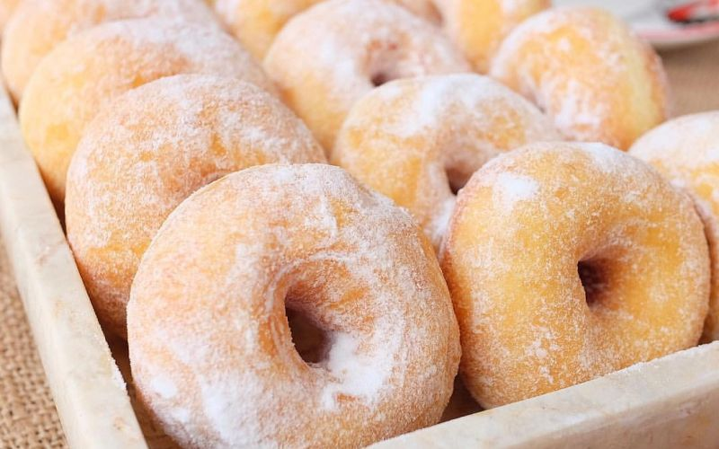
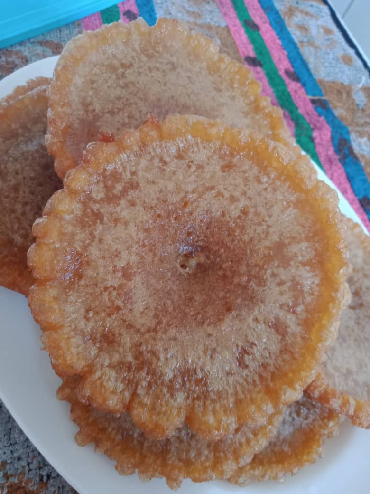

During the Movement Control Order (MCO), I'm doing a good day with my family member which is we can spend our leisure time together watching tv and do some activity together. My sister and I always make doughnut by following a simple recipe from youtube. After doing that, we also share the recipe with others. I also have share the recipe by a youtube link here.
Rahsia Buat Donut Gebu dan Sedap ❤
Other than that, there are also a lot of group assignment that should be start and begin a virtual class. After a virtual class, me and my friend sharing some information for our group assignment that need to be done and submitted.
Kuih Penyaram Gula Apong Tradisi Sarawak
A day during MCO was great when we having a great time with our beloved family. Next, we also can learn something new in virtual class. We have created such as a great memories together.